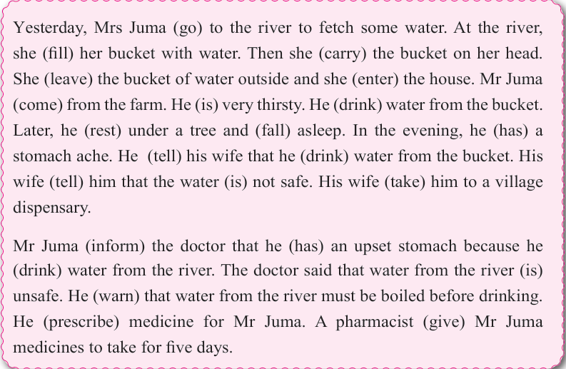

English for Secondary Schools Student’s Book Form One, printed page 92

Yesterday, Mrs Juma to the river to fetch some water. At the river, she her bucket with water. Then she the bucket on her head. She the bucket of water outside and she the house. Mr Juma from the farm. He very thirsty. He water from the bucket. Later, he under a tree and asleep. In the evening, he a stomach ache. He his wife that he water from the bucket. His wife him that the water not safe. His wife him to a village dispensary.
Mr Juma the doctor that he an upset stomach because he water from the river. The doctor said that water from the river unsafe. He that water from the river must be boiled before drinking. He medicine for Mr Juma. A pharmacist Mr Juma medicines to take for five days.
Complete the following story. Remember to sequence the events well. Then present it to the class.
It was Friday evening, after school hours. I was walking home with my friends,
Task
TASK
Write a paragraph or a short story using some of the following sequence words:
first, before, next, thereafter, firstly, earlier, later, later on, afterwards, finally, subsequently, secondly, therefore, in the end, last, lastly and to conclude.
Post the text on the class notice board for other students to read.